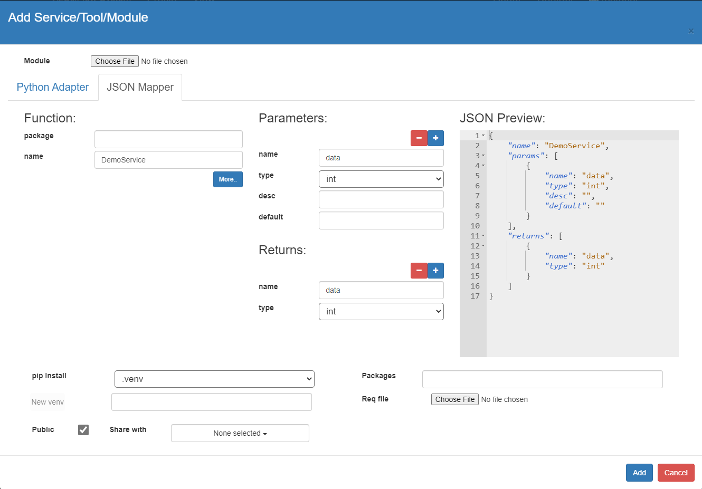

VizSciFlow is a workflow management system with a domain-specific language (DSL).
The DSL has simple syntax and a minimal set of keywords. The syntax has similarities to Python’s syntax and indenting.
Scientists can write a workflow script using the visual elements offered in VizSciFlow web interface.
| Construct | Keywords | Example |
|---|---|---|
| Conditional | if | |
| Iteration | for ... in | |
| Parallelization | parallel ... with | |
| parfor | | |
| Subworkflow | task |
Task is similar to functions in General-Purpose Programming Language.
|
| Workflow |
Run a pre-existing workflow with its ID and passing arguments.
|
Like Python, VizSciFlow is structured with indentation i.e. the statements within a block line up vertically. The block ends at a line less indented or the end of the file. If a block has to be more deeply nested, it is simply indented further to the right.
Here is a VizSciFlow indenting example:
task AlignSequences(ref, data, data2):
CheckQuality(data)
CheckQuality(data2)
data = pear.Merge(data, data2)
data = bwa.Align(ref, data)
data = SamToBam(data)
return data
AlignSequences('/public/genomes/Chr1.cdna', '/public/MiSeq_SOP/F3D6_S194_L001_R1_001.fastq', '/public/MiSeq_SOP/F3D6_S194_L001_R2_001.fastq')
VizSciFlow is a dynamic language. The type of a literal is inferred from the value. For example:
| Integer | i = 10 |
| Float | f = 10.0f |
| Text | s = "Hello World!" |
This is the left-top panel of the user interface. It lists all the data items available from different file systems (posix, galaxy, hdfs). The public folder of each file system is available to all users for read access. Another folder named as username is available for read-write accesses. The generated files during workflow execution are usually found in this folder.
To insert a data item into the code editor, first remove the argument name from the service call and then click right button on the item and select "To Editor".
Sometimes, you may need to insert the selected data item in the arguments box. Right click on the selected item and press "To args" context menu item.
The services/tools/modules for the workflows are listed on the right-top corner of the UI. There are 3 different access modes for the service. If you don't see your tool, click the "All" radio button.
Experienced users can extend the capabilities of the system by adding new services to it. It is important to decide the input and output of the tool. You may have multiple threads in the tool, but it must have a single synchrounous exit point. Different types of tools can be integrated into VizSciFlow system.
def demo_service(context, *args, **kwargs):
return str(args[0]) if args else 0
Here is a json mapper of the above service. Give a meaningful name to the service by changing the "Name". <package>.<name> or (only <name> if package is empty) must be unique to the DSL vocabulary.
{
"name": "DemoService",
"params": [
{
"name": "data",
"type": "int"
}
],
"returns": {
"name": "data",
"type": "int"
}
}
print(DemoService(10))
If you run this 10 will be printed in log.
We have shown below a complete example of adding FastQC tool to the system.
from os import path
from pathlib import Path
fastqc = path.join(path.abspath(path.dirname(__file__)), path.join('bin', 'fastqc'))
def demo_service(context, *args, **kwargs):
arguments = context.parse_args('CheckQuality', 'fastqc', *args, **kwargs)
outdir = context.createoutdir()
cmdargs = [arguments["data"], "--outdir=" + outdir]
context.exec_run(fastqc, *cmdargs)
outname = Path(arguments["data"]).stem
return path.join(outdir, outname + "_fastqc.html"), path.join(outdir, outname + "_fastqc.zip")
{
"package":"",
"name":"FastQService",
"params":[
{
"name":"data",
"type":"file",
}
],
"returns":[
{
"name":"html",
"type":"file"
},
{
"name":"zip",
"type":"file"
}
]
}
html,zip = FastQService(data)
Here is another example of using matplotlib in VizSciFlow. Since the executation model of VizSciFlow is unattended execution (in contrast to interactive execution), matplotlib.show will not work. The output must be saved as a file using savefig.
Here is an adapter for the service:
from os import path
import matplotlib.pyplot as plt
def demo_service(context, *args, **kwargs):
plt.plot(args[0], args[1])
plt.xlabel('Months')
plt.ylabel('Books Read')
output = path.join(context.gettempdir(), 'books_read.png')
plt.savefig(output)
return output
{
"package":"",
"name":"BookChartV3",
"params":[
{
"name":"data",
"type":"int[]",
"desc":""
},
{
"name":"data2",
"type":"int[]",
"desc":""
}
],
"returns":[
{
"name":"data",
"type":"file"
}
]
}
BookReadChart()
Here is another adapter for running a python script (fastqe) which is installed using pip install "fastqe". As it is installed as a module, we need to use python shell to run it. context.pyvenv_run can do it.
from os import path
from pathlib import Path
thispath = path.dirname(__file__)
def demo_service(context, *args, **kwargs):
arguments = context.parse_args('FastQE', 'fastqc', *args, **kwargs)
outdir = context.createoutdir()
output = path.join(outdir, Path(arguments['data']).stem + "_fastqe.html")
context.pyvenv_run(thispath, 'fastqe', arguments['data'] + ' --min --max --output=' + output)
return output
#!/bin/bash
source /home/venvs/.venvpy2/bin/activate
python2 $1 $2 $3 $4 $5 $6 $7 $8 # $1 is a python script/program. $2-$8 are the arguments passed to $1
out, err = context.pyvenv_run(thispath, "python2", blastz, *cmdargs) # python2 is the filename with extension .sh
#!/bin/bash
source /home/venvs/.venvpycoqc/bin/activate
python2 $1 $2 $3 $4 $5 $6 $7 $8
The right-bottom panel lists the saved workflows of the system. Workflows can be public, private or shared. New workflows can be saved by clicking the "+" button.
The left-bottom panel lists all the workflow instances run by this user. You can stop currently running workflows.
Newer jobs are shown on the top. Jobs which were modified in the last 5 minutes are shown red colored.
Double click an item to display the status information of workflow execution.
If you check a single running job, the incremental execution status of each step is shown on the report viewer.